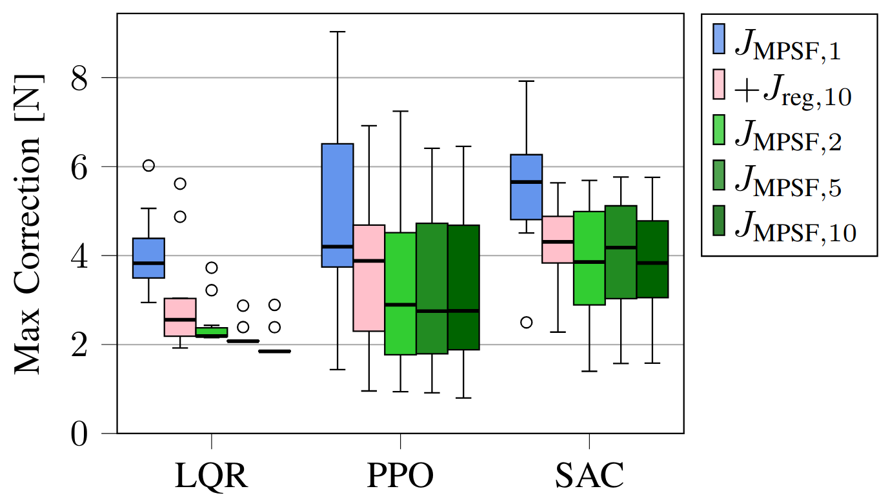
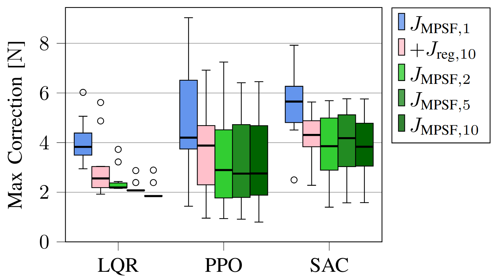

1 - Multi-Step Safety Filters
Fig. 1: Chattering caused by the standard one-step MPSF versus the multi-step MPSF. The multi-step filter reduces the peak-to-peak amplitude of chattering from 16.3cm to 3.6cm.
1.1 - Motivation
Safety filters impart hard safety guarantees to controllers, including deep learning controllers [1]. Model predictive safety filters (MPSFs) are a category of safety filters that leverage model predictive control (MPC) to predict whether uncertified (i.e., potentially unsafe) inputs sent from the controller will violate the constraints. In the case of a potential future constraint violation, the MPSF determines the minimal deviation from the uncertified input that results in constraint satisfaction.
Despite strong theoretical guarantees, MPSFs may cause chattering and high-magnitude corrections. Chattering occurs when the controller directs the system towards a constraint boundary and is repeatedly stopped by the safety filter. This leads to jerky and oscillatory behaviour, degrading performance and potentially causing constraint violations.
1.2 - Method
The standard (one-step) safety filter objective function is [1]:
$J_{\text{SF},1} = \|\pi_{\text{uncert}}(\textbf{x}_k) - \textbf{u}_{0|k}\|^2,$
where $\textbf{x}_k$ is the state at time step $k$, $\pi_{\text{uncert}}$ is the RL policy, and $\textbf{u}_{0|k}$ is the input to be applied (the optimization variable). By generalizing to multiple steps, the filter can minimize corrections over a longer prediction horizon:
$J_{\text{SF},M} = \sum_{j=0}^{M-1} w(j)\| \pi_{\text{uncert}}(\textbf{z}_{j|k}) - \textbf{u}_{j|k} \|^2,$
where $w(\cdot) : \mathbb{N}_{0} \to \mathbb{R}^+$ calculates the weights associated with the $j\text{-th}$ correction, $M$ is the filtering horizon, $\textbf{z}_{j|k}$ is the estimated future state at the $(k + j)$-th time step computed at time step $k$, and $\textbf{u}_{j|k}$ is the input at the $(k + j)$-th time step computed at time step $k$. The inputs are the optimization variables. This allows the agent to proactively correct actions to avoid unsafe states.
Contributions: We propose generalizing the standard safety filter objective function to minimize corrections over a horizon. We apply this approach to model predictive safety filters (MPSFs) and prove our approach inherits the theoretical recursive feasibility guarantees of the underlying MPC. We demonstrate this multi-step approach reduces chattering, jerkiness, and other potentially unsafe corrective actions.
1.3 - Results
To determine the efficacy of the proposed multi-step MPSF, we ran experiments on a simulated cartpole in the safe learning-based control simulation environment $\texttt{safe-control-gym}$ [2] and on a real quadrotor, the Crazyflie 2.0. The underlying MPC is a robust nonlinear MPC formulation [3]. The experiments test the standard one-step MPSF compared to our proposed multi-step MPSF with $M=2, 5, 10$. Additionally, we consider the one-step MPSF with regularization $J_{\text{reg}}$.
1.3.1 - Simulation Experiments
 

Fig. 3: Results for simulated experiments on a cartpole testing the multi-step approach.
1.3.2 - Real Hardware Experiments
Fig. 4: Results for real hardware experiments on a Crazyflie 2.0 quadrotor testing the multi-step approach.